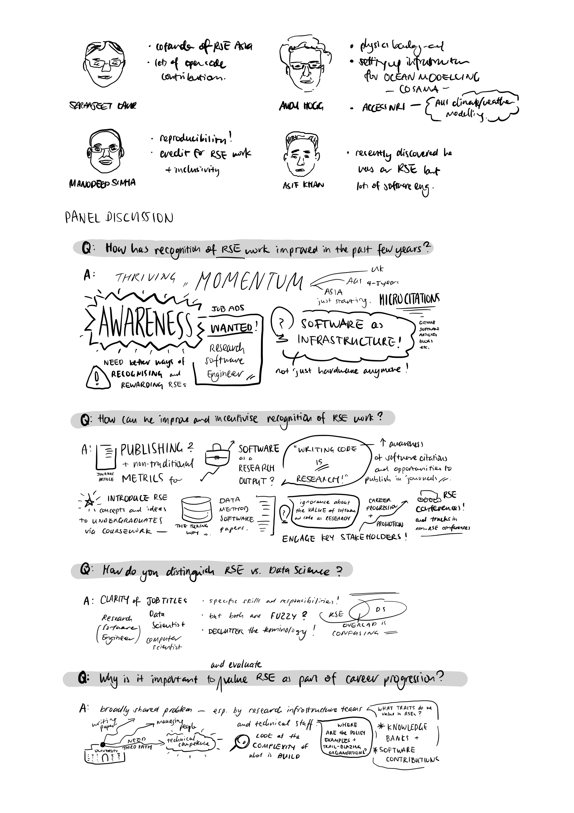
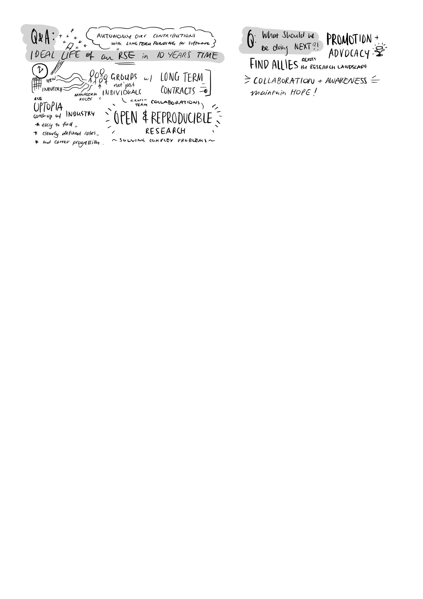
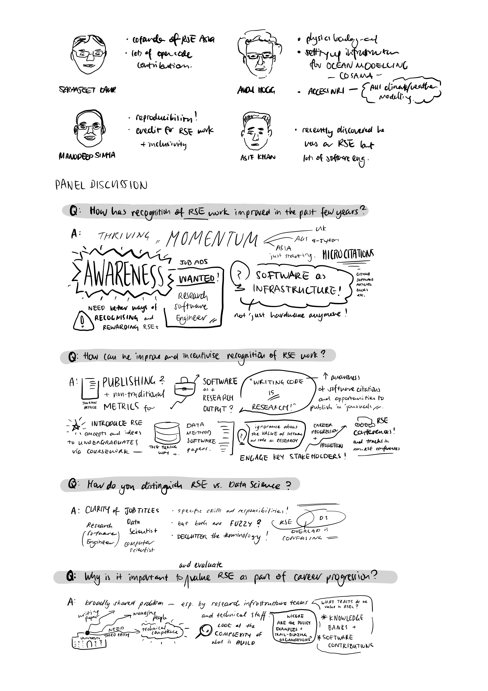
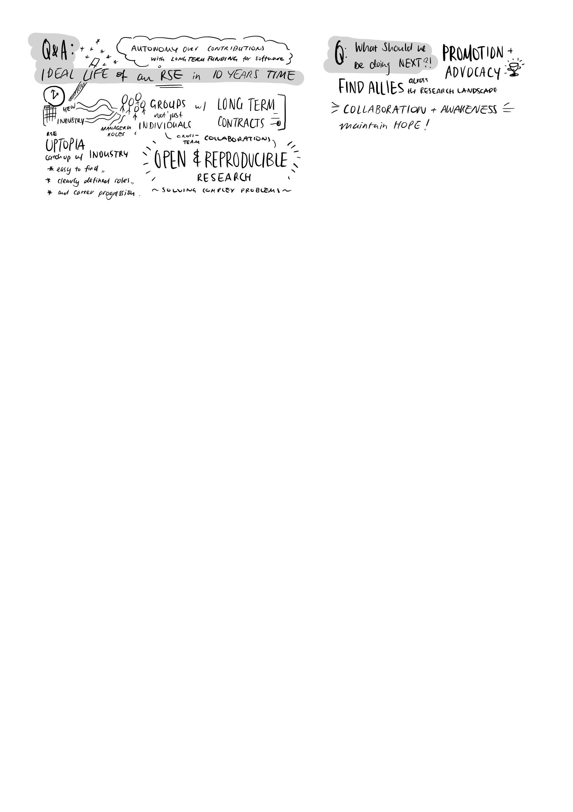

RSEAA Strategy & Policy Panel
 
Links: - Key Takeaways Board on Padlet - RSEAA program information - Unconference Notes
Notes from this event:

 
Links: - Key Takeaways Board on Padlet - RSEAA program information - Unconference Notes
Notes from this event: